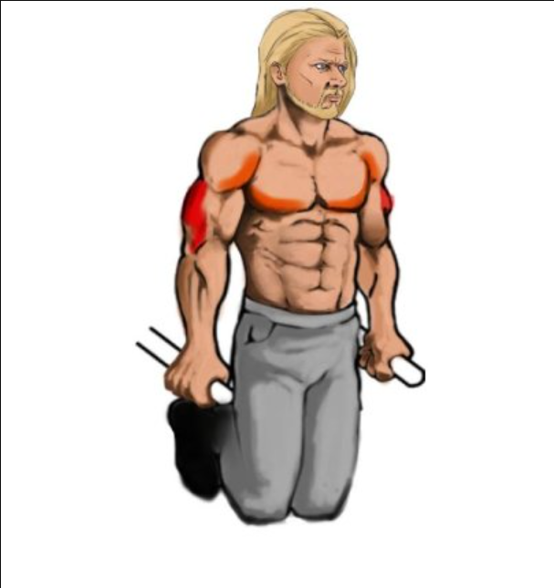

the following exercises are some basic compound movements that you can do without any equipment other than a local sport's garden. all of these exercises are great for starting out, they cover most of the body's muscles and will make you stronger over time. I would personally recommend you to start from three sets of 12 repetitions, if it's hard do less repetitions or try an easier veriation. If you it is too easy maybe try and increase the repetitions or do a harder veriation.
| Exercises | visual example of the technique | technique details | musceles worked |
| the push up | Get down on all fours, placing your hands slightly wider than your shoulders. Straighten your arms and legs. Lower your body until your chest nearly touches the floor. Pause, then push yourself back up. Repeat. | chest, shoulders and triceps | |
| the dip |  | Grab the parallel bars and jump up, straighten your arms. Lower your body by bending your arms while leaning forward. Dip down until your shoulders are below your elbows. Lift your body up by straightening your arms. Lock your elbows at the top. | chest, shoulders and triceps |
| the pull up | Start by standing directly below a pull-up bar. ... Inhale, then exhale. ... Engaging the muscles in your arms and back, bend your elbows and raise your upper body up toward the bar until your chin is over the bar. ... At the top of the movement, inhale. | biceps, back, back shoulders, forearms | |
| the squat | Stand with your hands on the back of your head and your feet shoulder-width apart with your feet turned out slightly to open the hip joint. Lower your body until your thighs are parallel to the floor. Pause, then return to the starting position. | legs (quadriceps, hamstrings, glutes, calves) |